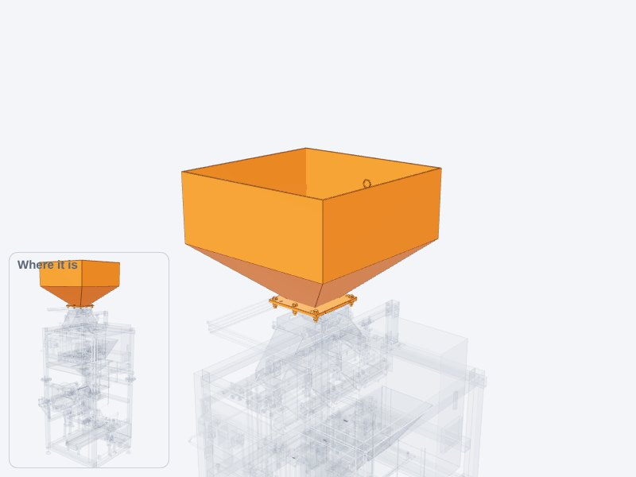
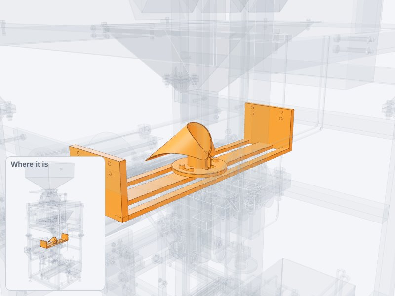
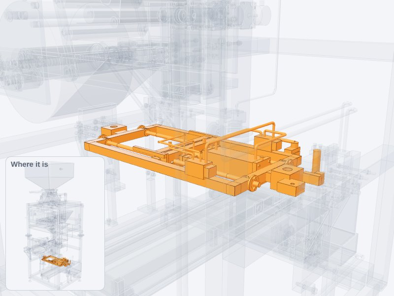
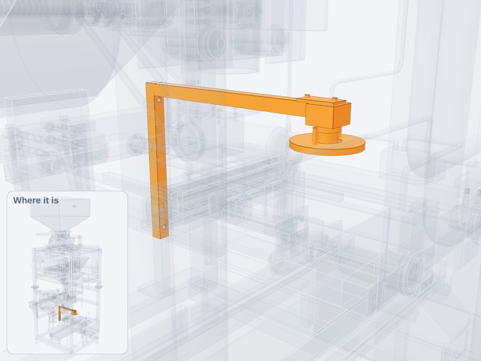

1The six stations

1Hopper
A removable stainless hopper holds the candy. It flows down by gravity, with no motor.
140 L · about 70 min per refill 2
2 3
3Weigh buckets
Each bucket hangs on a load cell. A soft brush gate closes at the target weight. Then the door drops the dose.
30 g dose · 0.11 g steps
4Forming the bag
Flat film runs off the roll over the dancer arm. The collar folds it into a tube around the forming tube.
Bag 94 × 70 mm
5Sealing and cutting
The film never stops. The seal band seals the back seam. The flying jaws ride down with the film to seal, and the knife cuts.
120 °C ± 2 °C
6Camera check
The conveyor carries each bag under the camera. The reject pusher removes a bad bag.
Answer in under 1 s